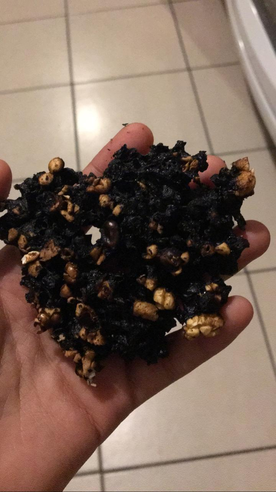
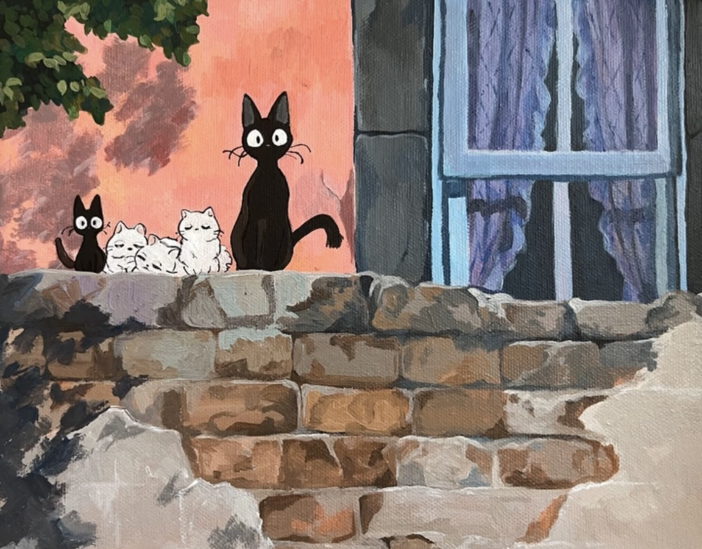
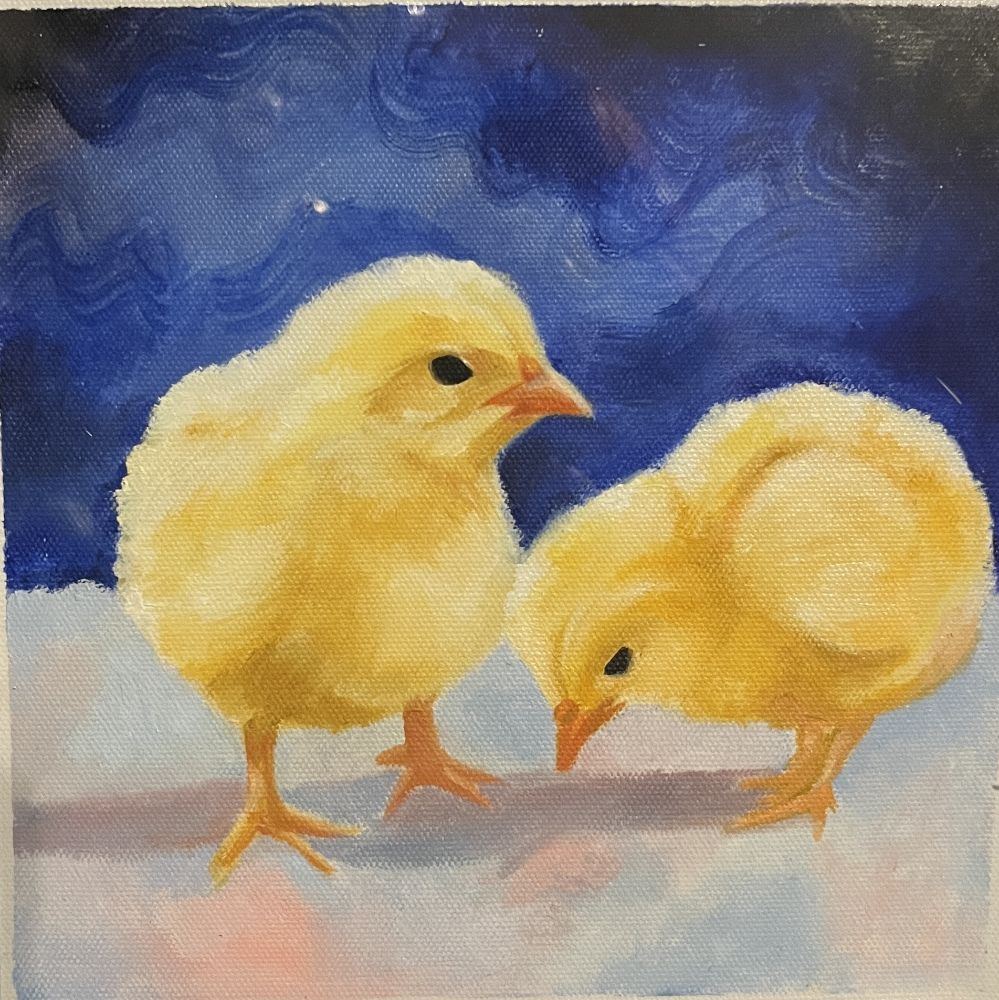

Creative Era
Explore my journey through creative hobbies like crochet, baking, painting, and more. Each one left a mark!
Crochet Era
My grandma and aunt always crocheted. When I visited them, the sofa was full of yarn. I got into crocheting
because I thought I could take their legacy and make my mom mad (she doesn’t like it).
What I Made: Tote bags, plushies, and a hat.
Rating: 7/10. I enjoyed it, but it was time-consuming and made my fingers sore.

Bakery Era
This era started after taking cooking classes in middle school. I felt like I was on MasterChef! I learned to make
cookies, pizza, brownies, and more. I moved on after I exploded a cookie in the microwave.
Rating: 5/10. Good food, but lots of calories and cleanup.


Painting/Art Era
My painting journey began after my friend gifted me acrylic art. My last painting was for my crush. I stopped
because it consumed too much time, and I thought ending on a meaningful note was perfect.
Rating: 8/10. Loved the results, but the process was exhausting.